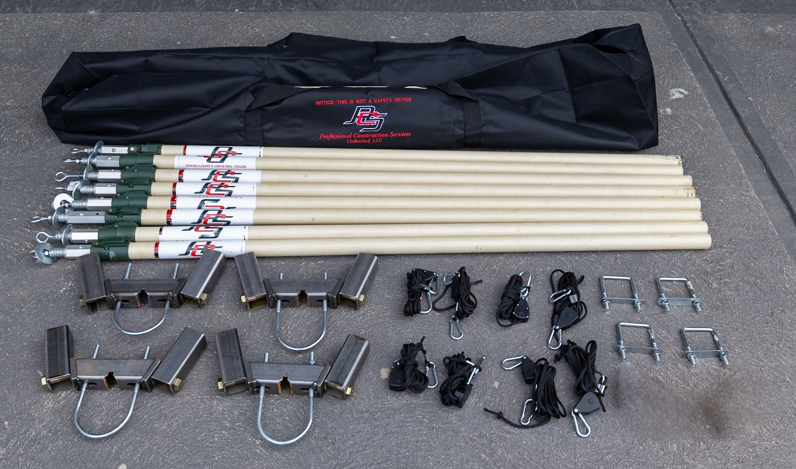
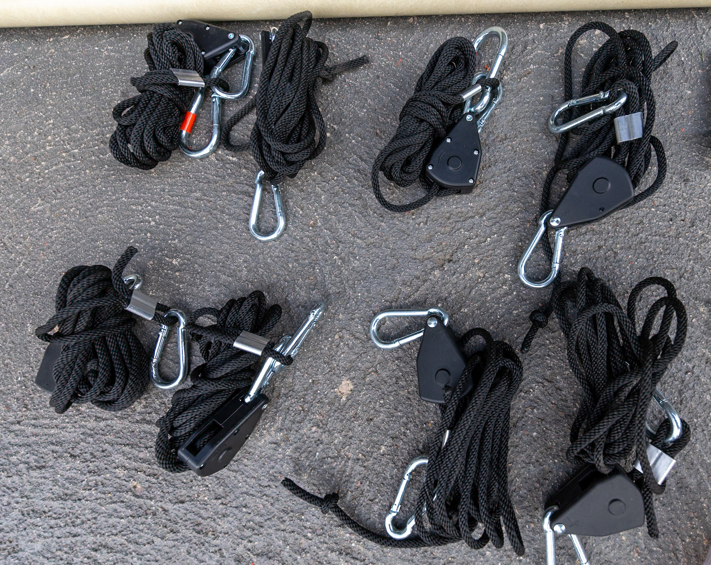
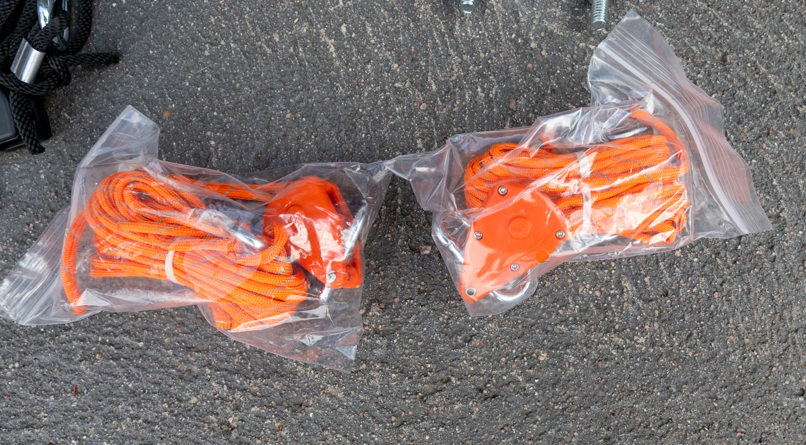

Sistemas de Contención para Elevadores y Piezas de Reemplazo
Soluciones estructurales y de contención de nivel profesional diseñadas para entornos exigentes de elevación y construcción.
*Totalmente Licenciado, Asegurado y Patentado
• Estructura Completa de 4 a 8 pies (sin tela) → Recomendado para contención de sobrepulverización
• Estructura Compacta de 2 a 4 pies (sin tela) → Recomendado para aplicaciones de soldadura y mantenimiento
• Paquete Completo de 4 a 8 pies con Tela → Pedido personalizado según especificaciones

Estructura de Contención para Elevador 4 a 8 pies (Sin Tela)
Nuestro sistema estructural de 4 a 8 pies está diseñado específicamente
para la contención de sobrepulverización y control de residuos en entornos
de trabajo en altura. Este sistema profesional crea un perímetro seguro
alrededor de plataformas estándar sin agregar peso innecesario ni tiempo adicional de instalación.
Ideal para pintura, recubrimientos, preparación de superficies y aplicaciones
de acabado industrial. El marco modular permite una implementación rápida
manteniendo la eficiencia del flujo de trabajo.
- Ideal para contención de pintura y preparación de superficies
- Construcción de acero industrial de alta resistencia
- Compatible con la mayoría de plataformas elevadoras estándar
- Diseño modular ajustable en altura
- Instalación rápida y repetible
Más Detalles del Producto
Diseñado para uso diario en entornos exigentes. Componentes fabricados con precisión y probados en campo para garantizar durabilidad a largo plazo.
Diseñado para contratistas profesionales • Pago seguro con Stripe

Estructura Compacta para Elevador 2 a 4 pies (Sin Tela)
Diseñada para soldadura, mantenimiento y operaciones en espacios reducidos
donde no se requiere altura completa. Proporciona contención controlada
manteniendo maniobrabilidad y acceso.
Ideal para reparaciones mecánicas, fabricación y modificaciones estructurales.
- Optimizada para soldadura y mantenimiento
- Perfil bajo para espacios confinados
- Construcción de acero resistente
- Compatible con plataformas estándar
- Ideal para equipos de servicio industrial
Más Detalles del Producto
Incluye postes estructurales, soportes, herrajes y componentes necesarios para su instalación.
Precios por volumen disponibles

Paquete Completo 4 a 8 pies con Tela Industrial
Incluye estructura de acero y tela industrial fabricada a medida.
Diseñado para control total de sobrepulverización y residuos.
Las telas se fabrican según especificaciones del proyecto.
Se aplican tiempos de entrega.
- Sistema completo estructura + tela
- Tamaño personalizado según proyecto
- Tela industrial reforzada resistente a desgarros
- Ideal para entornos regulados
- Opción de logotipo disponible
Más Detalles del Producto
Material de alta resistencia diseñado para uso industrial continuo.
Fabricación personalizada • Se aplican tiempos de entrega
Componentes modulares para reemplazar o expandir su sistema.

Ensamble de Soporte de Esquina
El Ensamble de Soporte de Esquina está diseñado para proporcionar
integridad estructural y estabilidad en los sistemas de contención para elevadores.
Estos soportes reforzados actúan como puntos críticos de unión,
garantizando alineación adecuada y resistencia bajo carga.
Fabricados para entornos industriales exigentes, ofrecen
durabilidad prolongada incluso bajo uso diario continuo.
- Acero cortado con precisión
- Acabado resistente a la corrosión
- Incluye herrajes de alta resistencia
- Compatible con configuraciones estándar del sistema
- Ideal para reemplazo o expansión del sistema
Más Detalles del Producto
Diseñado para soportar cargas repetidas y vibración constante en plataformas elevadoras. Su construcción reforzada ayuda a mantener la estabilidad del marco y reduce el desgaste prematuro en los puntos de conexión.
Se vende individualmente • Descuentos por volumen disponibles

Postes de Contención 2' a 4'
Los Postes de Contención de 2 a 4 pies funcionan como miembros verticales
de soporte dentro del sistema estructural. Diseñados para configuraciones compactas,
proporcionan estabilidad y flexibilidad en aplicaciones de soldadura,
mantenimiento y espacios confinados.
Su diseño modular permite ajustar la altura del sistema según las
necesidades operativas específicas.
- Expansión del sistema existente
- Reemplazo de postes dañados
- Configuraciones personalizadas de contención
- Construcción de acero de alta resistencia
- Instalación rápida y alineación precisa
Más Detalles del Producto
Fabricados para mantener resistencia estructural bajo carga constante. Su acabado industrial protege contra corrosión y desgaste en entornos de construcción y mantenimiento pesado.
Se vende individualmente • Descuentos por volumen disponibles

Postes de Contención 4' a 8'
Los Postes de Contención de 4 a 8 pies están diseñados para
configuraciones de altura completa, proporcionando soporte vertical
extendido para aplicaciones de contención de sobrepulverización
y control ambiental.
Ideales para proyectos industriales que requieren cobertura
completa alrededor de la plataforma del elevador.
- Soporte estructural extendido
- Compatibles con sistemas de altura completa
- Construcción reforzada de acero industrial
- Ideales para reemplazo o expansión
- Resistentes al uso diario intensivo
Más Detalles del Producto
Diseñados para mantener alineación vertical y estabilidad bajo condiciones de carga dinámica. Su estructura modular permite ajustes rápidos en campo según requerimientos del proyecto.
Se vende individualmente • Descuentos por volumen disponibles

Kit de U-Bolt Cuadrado
El Kit de U-Bolt Cuadrado proporciona puntos de fijación seguros para componentes del sistema de contención. Diseñado para ofrecer fuerza de sujeción confiable y estabilidad estructural a largo plazo.
- Construcción de acero de alta resistencia
- Diseñado para alta fuerza de sujeción
- Compatible con rieles y estructuras de elevadores
- Resistente a deformación bajo carga
- Ideal para reemplazos y configuraciones personalizadas
Más Detalles del Producto
Fabricado con acero industrial tratado para resistir fatiga estructural y condiciones exigentes de obra. Permite una fijación firme manteniendo alineación adecuada.
Se vende individualmente • Descuentos por volumen disponibles

Bolsa de Reemplazo para Sistema de Contención
La Bolsa de Reemplazo está diseñada para restaurar la funcionalidad
de sistemas de contención existentes sin necesidad de sustituir
la estructura completa. Fabricada con materiales industriales
de alta resistencia, soporta uso repetido en entornos exigentes.
Es una solución rentable para prolongar la vida útil
de su sistema de contención.
- Instalación rápida y sencilla
- Material resistente de uso industrial
- Compatible con marcos de contención estándar
- Ideal para mantenimiento preventivo
- Reduce costos de reemplazo total del sistema
Más Detalles del Producto
Diseñada para soportar ciclos repetidos de carga y descarga, esta bolsa mantiene su integridad estructural bajo condiciones de trabajo intensivo. Perfecta para reemplazar componentes desgastados o dañados por uso continuo.
Se vende individualmente • Descuentos por volumen disponibles

Tela Industrial de Contención (Panel Medio Mostrado)
Nuestra Tela Industrial de Contención está diseñada específicamente
para aplicaciones de contención en plataformas elevadoras.
Controla sobrepulverización, residuos, polvo y materiales ligeros,
integrándose perfectamente con los sistemas estructurales.
Fabricada con material reforzado de grado industrial,
proporciona contención confiable sin añadir peso excesivo.
- Material industrial de alta resistencia
- Costuras reforzadas y resistentes a desgarros
- Diseñada para instalación y retiro repetido
- Opciones de tamaño personalizado disponibles
- Ideal para pintura, soldadura y mantenimiento
Más Detalles del Producto
Fabricada para entornos industriales exigentes, incluye puntos de sujeción reforzados que reducen desgaste prematuro. Disponible en configuraciones personalizadas, incluyendo opciones con logotipo corporativo.
Revisaremos las especificaciones y enviaremos cotización en 1 día hábil.

Cuerda Negra Industrial de Alta Resistencia
La Cuerda Negra Industrial está diseñada para proporcionar
amarre seguro y soporte de tensión dentro de sistemas
de contención para elevadores.
Fabricada con fibras sintéticas de alta resistencia,
ofrece durabilidad, flexibilidad y rendimiento confiable
en entornos de obra exigentes.
- Alta resistencia a la tensión
- Resistente a abrasión y desgaste
- Flexible para ajuste y amarre sencillo
- Ideal para asegurar tela y componentes estructurales
- Apariencia profesional en color negro
Más Detalles del Producto
Diseñada para mantener su resistencia bajo carga repetida y exposición ambiental. Adecuada para asegurar paneles de contención, líneas de tensión temporales y soporte estructural.
Se vende individualmente • Descuentos por volumen disponibles

Cuerda Naranja de Alta Visibilidad
La Cuerda Naranja de Alta Visibilidad ofrece la misma
resistencia y durabilidad que nuestra cuerda negra,
con mayor visibilidad para mejorar la seguridad
y organización en el lugar de trabajo.
Ideal para entornos con múltiples equipos o
zonas de alto tráfico.
- Color de alta visibilidad para seguridad
- Construcción sintética resistente
- Resistente a clima y abrasión
- Perfecta para delimitar y asegurar áreas
- Fácil identificación en obra
Más Detalles del Producto
Diseñada para mejorar la identificación de líneas de tensión, zonas aseguradas y límites de contención. Combina seguridad visual con rendimiento estructural confiable.
Se vende individualmente • Descuentos por volumen disponibles
• Diseñado para uso industrial diario
• Diseño modular escalable
• Precios por volumen
• Pago seguro con Stripe
Los productos mostrados no son dispositivos de seguridad ni sustituyen equipo de protección requerido ni cumplimiento con regulaciones OSHA. El usuario es responsable del uso adecuado y cumplimiento normativo.